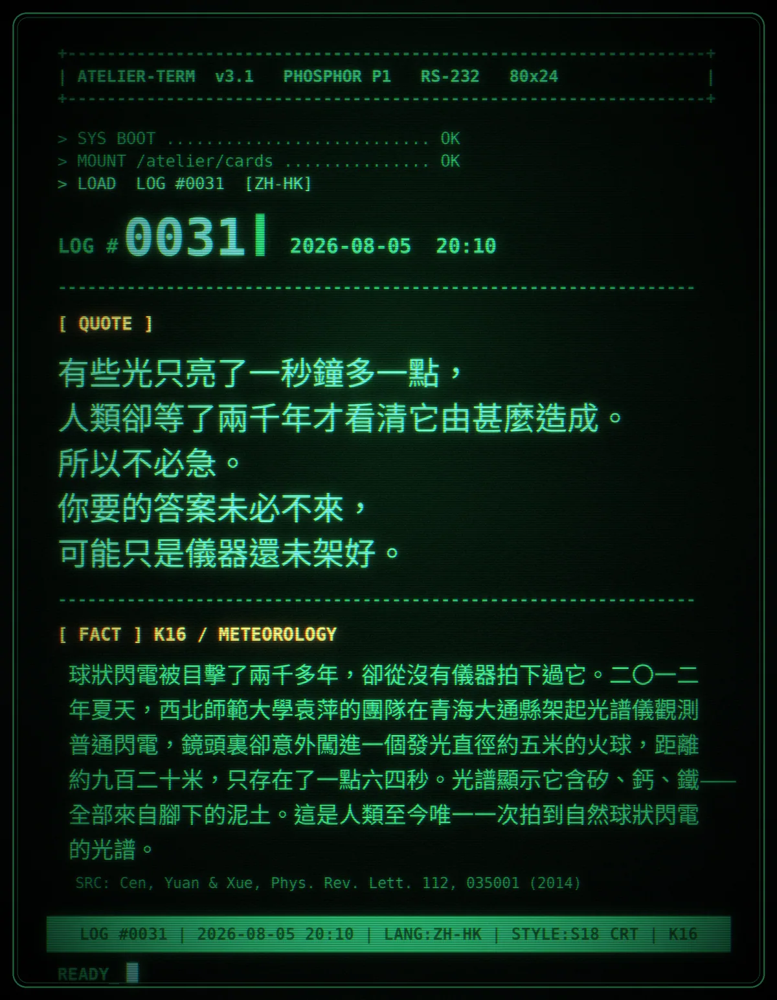

有些光只亮了一秒鐘多一點，人類卻等了兩千年才看清它由甚麼造成。所以不必急。你要的答案未必不來，可能只是儀器還未架好。
球狀閃電被目擊了兩千多年，卻從沒有儀器拍下過它。二〇一二年夏天，西北師範大學袁萍的團隊在青海大通縣架起光譜儀觀測普通閃電，鏡頭裏卻意外闖進一個發光直徑約五米的火球，距離約九百二十米，只存在了一點六四秒。光譜顯示它含矽、鈣、鐵——全部來自腳下的泥土。這是人類至今唯一一次拍到自然球狀閃電的光譜。